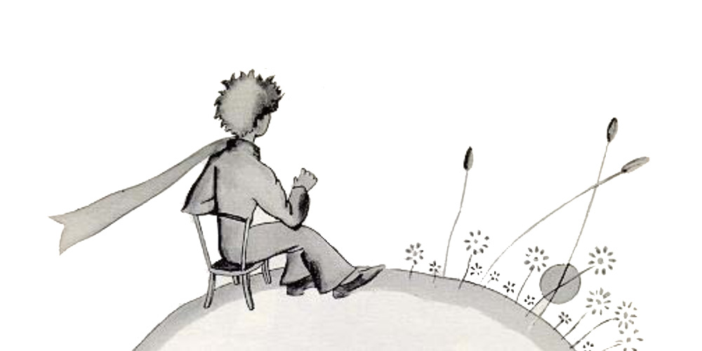

Chapter 6
Oh, little prince! Bit by bit I came to understand the secrets of your sad little life... For a long time you had found your only entertainment in the quiet pleasure of looking at the sunset. I learned that new detail on the morning of the fourth day, when you said to me:
"I am very fond of sunsets. Come, let us go look at a sunset now."
"But we must wait," I said.
"Wait? For what?"
"For the sunset. We must wait until it is time."
At first you seemed to be very much surprised. And then you laughed to yourself.
You said to me:
"I am always thinking that I am at home!"
Just so. Everybody knows that when it is noon in the United States the sun is setting over France.

If you could fly to France in one minute, you could go straight into the sunset, right from noon. Unfortunately, France is too far away for that. But on your tiny planet, my little prince, all you need do is move your chair a few steps. You can see the day end and the twilight falling whenever you like...
"One day," you said to me, "I saw the sunset forty−four times!"
And a little later you added:
"You know−− one loves the sunset, when one is so sad..."
"Were you so sad, then?" I asked, "on the day of the forty−four sunsets?"
But the little prince made no reply.